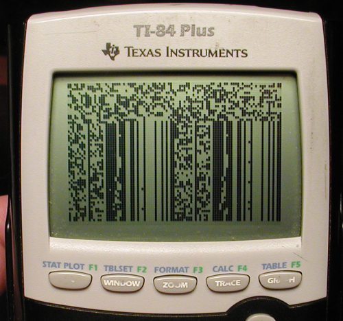

While learning Z80 assembly I made a simple program for the TI-84+ graphing calculator which copies a portion of RAM to the screen buffer and then lets the user scroll through RAM with the arrow keys.